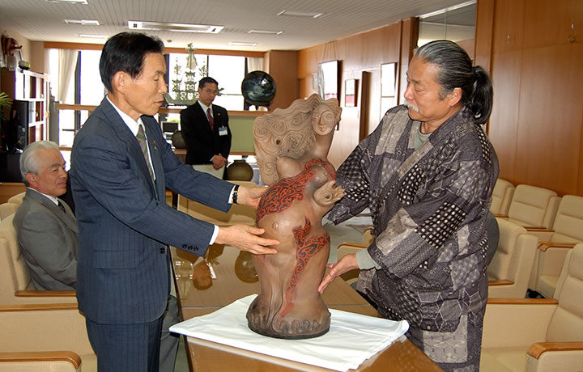

|  |
| 【寄贈式典にて・石垣市長に「秋の女神」を手渡す猪風来館長】 |
日本最大の縄文土器制作など、縄文野焼き技法の第一人者として知られる作家・猪風来（いふうらい）。
猪風来は新見市法曽に猪風来美術館（法曽陶芸館）を開館し、近年は中国山地の山々の霊気あふれる豊饒を
縄文文様にこめた創作を続けています。
奥深い山々の匂いたつ精気が「秋の女神」「春の女神」ふたりの女神の姿となり、春秋の豊饒の化身として
結実しました。
この中国山地より産まれ出でた新見発の女神像は、開眼作「生命のシリーズ」に連なる新たな代表作です。
この縄文大型土偶は猪風来が３５年間の修業の中でつちかった熟練の野焼き技法によって焼成されました。
太陽や風や火、土の有り様にしたがう極意から得られる野焼きの美は、大自然の力強さと豊かな心を
たたえています。
二体の女神像のうち「秋の女神」が新見市に寄贈され、新見美術館で展示されることとなりました。
もう一体の「春の女神」は猪風来美術館に展示されております。